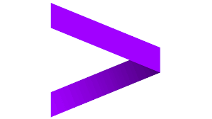
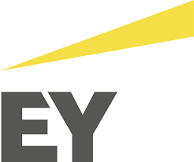

Grocery Shopper Assistant
Upload recipes to the cookbook, pick any combo, get one grocery order from your local store. Text in recipes or items on the fly.
Engineer who sits inside a client's problem, builds the smallest thing that answers it, and leaves the artifact behind. Palantir-origin role.
I think this is what strategy management should become.
In my wordsSoftware agents that plan multi-step work, use tools, and act without a human approving each turn.
I build mine to do one job well, then hand off.
In my wordsModels that generate text, code, or images from a prompt. The layer that agentic systems sit on top of.
I treat it like electricity. Cheap, broadly useful, not the product.
In my wordsThe craft of writing instructions models follow reliably. Less clever phrasing, more contract design.
I spend more time on context windows than wording.
In my wordsThe pieces a software product runs on and how they talk to each other.
I design the smallest viable stack, then replace parts when the load earns it.
In my wordsHow a company's people, processes, and technology produce its work. Consulting's term for the whole machine.
I rewrite them when agentic systems change what humans should still do.
In my wordsSequencing work so value compounds and the next bet pays for the last.
Not PM ticket triage. Strategy with dates attached.
In my wordsThe messy work after the deal signs. Merging systems, people, and operating models without breaking either company.
I lead the technology track.
In my wordsConsulting math: what a project costs to run, what it's priced at, what it earns.
I treat it as a product P&L I own.
In my wordsDeployed and working. The flow runs unattended.
I check in periodically. If it breaks, I fix it.
In my wordsWorking but not polished. Public so I can stress-test it in the open.
Pieces may change week to week.
In my wordsShipped, learned from, moved on. The code's still there.
I'm not adding to it.
In my wordsA plain-English breakdown of the tools, models, and patterns behind this project.
For anyone curious about what's under the hood — no CS degree required.
In my wordsPersonal productivity agents, tackling the mundane tasks you don't want to spend your free time doing.
Upload recipes to the cookbook, pick any combo, get one grocery order from your local store. Text in recipes or items on the fly.
Watchlist of artists I want to see live. Pings me the second any of them announce an LA show.
Historical repository for our dynasty league. Stats, analytics, team values, and year-over-year data to analyze the league over time.
Drop in a pickup and drop-off, see live prices across the major rideshare apps side-by-side. Pick the cheapest ride, save the difference.
Built for my snake-draft bracket league. Tracks each drafter's teams through the tournament and pulls live scores faster than ESPN.
Interactive bracket for the NBA playoffs. Pick your picks, watch the rounds advance, see who busted their bracket first.
Crawls listing APIs. Filters to my criteria, flags underpriced comps. No more tab graveyard.
Optimizes Chase point redemption across flights, hotels, and transfer partners. Maximum bang-for-buck on the honeymoon.
Scans inbox and browser for promos, cashback, and expiring coupons. Surfaces the ones worth using at checkout.
Logs every wager, tracks P&L over time, shows where the edge actually is. The honest scoreboard.
Probability model that finds value where the market misprices outcomes. Bet with data, not gut.
Net worth, cash flow, and spending in one honest view. Tracks accounts, categorizes transactions, shows whether the month moved the needle.
Data, AI, and tech strategy by day. Builder by night. Aspiring FDE.
I advise teams on data, AI, and tech strategy. My focus: how agentic systems change operating models. I build products to test those ideas. Each one starts as a real problem I ran into.
Pairing strategy with shipped code. The target: forward deployed engineer. Someone who makes the idea real, not just specified.
This site is the index. Each tool started as a problem I hit first and grew into something I could point at. Strategy is more honest when the strategist has shipped.
Experience


Education
Bachelor's Degree in Business Administration
Viterbi School of Engineering — Innovation Specialization
Skills
Happy to trade notes on tech strategy, forward deployment, or anything I'm building.
Enter the password to view betting projects.